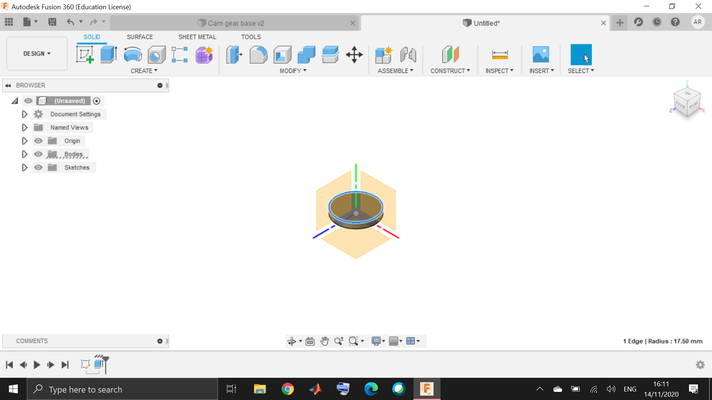
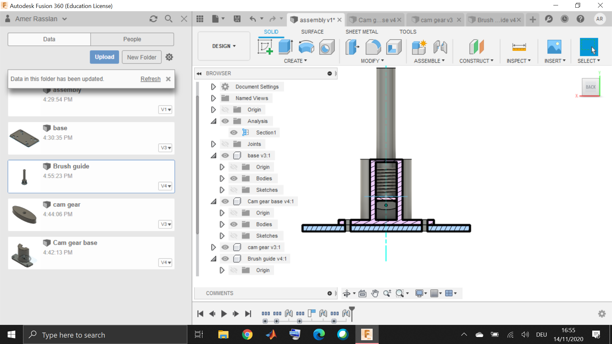

The 3d modelling of the toothbrush reciprocal mechanism is done using the program fusion and is devided into 4 parts as follows
First the base is drafted to be shaped like a rectangular with holes for fixation
Then the reciprocal mechanism is based on a cam-gear and shaft, which can be modeled using the ellipse tool
Then the reciprocal shaft which is holding the brush at its end can be modelled using the sketching of the circular profile then extrution

In order to hold the reciprocal shaft and the cam gear in constant contact, a spring loaded mechanism is added using the coil tool
The housing for the spring loaded mechanism is modelled by creating a sketch on the cam gear base fixation with a circular profile then extruding
Then by using the joints tool the mechanism can be assembled as follows:

To download the f3d file